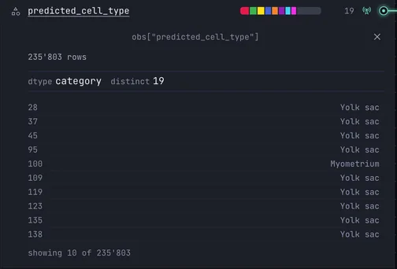

Importing
Bring an .h5ad into PointillViz: the import wizard maps its fields onto the viewer and converts it.
On this page2
- An AnnData file (
.h5ad) with the cells in.obs, their coordinates in.obsmand an expression matrix in.X,.raw.Xor a layer. Files written by scanpy or squidpy from Xenium, MERSCOPE or CosMx output have this shape. - A running PointillViz; see Installation.
There are two ways to import a file, and both end in the same dataset. The import wizard runs in the viewer: it proposes a mapping and lets you check it. The command line converts from a schema you write yourself, with no browser involved. Choose one; the rest of this page follows it.
Import wizard
Three steps: provide the file, check the mapping, convert. A Xenium section of 50,000 cells is through them in well under a minute.
Upload a file or point to one
Open the wizard
Press + Add in the viewer, or Upload an .h5ad on the home page.
Provide the file
Upload
Drop the file on the upload zone, or press Choose file(s). The browser sends it to the server; a file can be up to 2 GiB this way. For anything larger, use a server path.
Server path
Expand …or use absolute server path(s), paste the path and press Use these path(s). Nothing is copied, and there is no size limit. The path is on the machine PointillViz runs on, which need not be the computer the browser is open on. Several paths, one per line, become the sections of one dataset.
Directory
A whole directory of harmonized sections is imported as one atlas, without the mapping step below. See Atlases.
Let PointillViz read it
PointillViz looks through the file,
.obs,.obsm,.X, the layers and.uns, and notes what each entry is: its shape, its type, its categories, a few of its values. That takes a few seconds and is what the next step works from.

Map fields onto the viewer
The second step is where you tell PointillViz what is what: which matrix holds the coordinates, which column the cell types, which matrix the expression. The page has three columns, and each part of the file (.obsm, the expression matrices, .obs, .uns) gets its own band across them.
![The wizard's second step, Map fields to tabs, with three columns. Your file, on the left, lists obsm IFQUANT, X_spatial and X_umap, each marked Assigned. The Workspace in the middle shows the band Coordinates and views, read from .obsm: the coordinate system with X_spatial, 235803 by 2, interpreted as 2D spatial; X_umap included as an embedding tab named UMAP; and the dense matrix IFQUANT with 20 channels, labelled Protein Channels. PointillViz fields, on the right, lists Coordinate system, Embeddings and Dense obsm matrices, all Assigned.](../assets/media/importing-map-1280.webp)
Your file
![The Your file column of the .obs band: every column of the file with its state. obs_names, transcript_counts, total_counts, cell_area, nucleus_area, prot_area, prot_x, prot_y, n_counts, predicted_cell_type, niche_medium and niche_mean_neighbor_distance are Assigned; x_centroid, y_centroid, the control and codeword counts, nucleus_count, segmentation_method, xr_canonical_labels_archived, prot_ecode, count_outlier, predicted_label, niche_coarse, niche_fine, section_id and tissue_code are Not assigned; cell_id is Not assigned with the note that no PointillViz function uses it.](../assets/media/importing-col-file-702.webp)
Everything the file contains, one row per entry, whether PointillViz uses it or not.
- Assigned
- The entry feeds at least one field of the viewer.
Press the badge to jump to that field in the workspace. - Not assigned
- It does not. That is fine for identifiers, QC counters and duplicates: the aim is to pick what matters, not to use everything.
- Press an entry
- A preview opens with its shape, its type and a few of its values.

Workspace
The controls. Each field names what it needs and starts with PointillViz's proposal: the column or matrix whose name and shape fit best. Change it from the list, or tick and untick entries.

The (i) beside a field opens its explanation, in four parts (here for the cell-type column):
- What should I choose? What belongs in this field, and what to avoid.
- Why did PointillViz suggest this? Why this entry was proposed, and by what criterion.
- How will this be used? What the viewer does with it: here the colours, the legend, the filters and every cell-type comparison.
- Look it up in your file. Takes you to the entry in the left column, where you can open its preview.
PointillViz fields

Everything the viewer could show for this part of the file, and the state of each field.
- Assigned
- It has a source in your file. Remove takes it out again; it then shows as Not added.
- Not added
- An optional field that PointillViz found nothing to propose for, so it starts outside the workspace. If one of your columns fits, press + Add and choose it.
- Not in your data
- The file has nothing for it at all, so there is nothing to add. Tissue images, cell boundaries or polygons are extras: a file without them is still a complete dataset.
What to check
Three choices decide everything that follows, and a wrong one shows no error. Give them a look:
Coordinates
The matrix with the cells' positions in the tissue. Without it there is no map. The common trap: an embedding such as a UMAP chosen as coordinates. It is a two-column matrix too, but not tissue positions. A file without positions takes Non-spatial instead.
Expression
Which matrix holds the gene expression, and at what stage. Normalized values taken for counts, or the reverse, give wrong gene maps and wrong statistics everywhere, and nothing flags it. When the file holds both, PointillViz prefers the counts; the list shows what it detected (✓ counts) next to each choice.
Cell types
The column that colours the cells and that every cell-type comparison is built on. A cluster column works too, but then clusters are what the viewer calls cell types. If one file holds several sections, also set the section column, or they all land in one panel.
Last, make sure the extras you want are on: tissue images, cell boundaries, transcripts, embeddings, niches, continuous overlays. A field that says Not added is off; + Add turns it on.
Convert and open
Press Convert →. The conversion runs on the server and its log streams into the page: the mapping you confirmed first, then what is being written, then a report. A Xenium section of 50,000 cells takes ten to thirty seconds, 200,000 cells about a minute and a half. When it is done, Choose view → opens the dataset; it is also on the home page from now on.

Command line
The same conversion, without the browser: for scripts, and for files on a server you reach over SSH. It takes the file and a schema, the mapping written as JSON. The wizard prints one at the top of its log, so the easiest start is a schema copied from there.
{
"name": "mfi_gd16_5",
"title": "Maternal–fetal interface GD16.5",
"spatial": {"mode": "2d", "obsm_key": "X_spatial", "units": "µm"},
"celltype_obs": "predicted_cell_type",
"genes": {"enabled": true, "source": "X"},
"embeddings": [{"name": "UMAP", "obsm_key": "X_umap"}]
}macOS / Linux
pixi run python -m backend.convert --h5ad /data/xenium/MFI-GD16-5_rep1_R7.h5ad --schema schema.jsonWindows
pixi run python -m backend.convert --h5ad C:\data\xenium\MFI-GD16-5_rep1_R7.h5ad --schema schema.jsonRun it inside PointillViz/; the dataset appears in the viewer as soon as it finishes. Every field of the wizard has a key in the schema; the list is at the top of backend/convert.py.